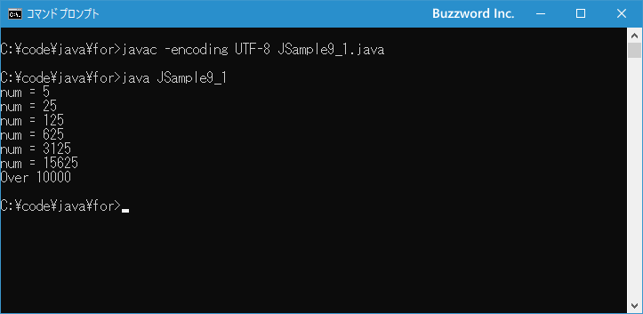

break文の使い方
break 文は for 文や while 文などの繰り返し処理の他に switch 文で使用されるもので、 break 文が実行されると繰り返し処理を強制的に終了し次の処理へ移ります。ここでは break 文、およびラベル付き break 文の使い方について解説します。
※ ここでは繰り返し処理で使用する break 文について解説しています。 switch 文での利用については「switch文を使った条件分岐」を参照されてください。
break文の使い方
break 文は繰り返し処理(と switch 文)で使用されるもので、 break 文が実行されると現在の繰り返し処理を強制的に終了します。書式は次のとおりです。
break
次の for 文を使ったサンプルを見てください。
int num = 1;
for (int i = 0; i < 100; i++){
num *= 2;
System.out.println("num = " + num);
if (num > 10000){
break;
}
}
System.out.println("End");
このサンプルでは 1 から開始した数値を繰り返し処理の中で 2 倍ずつしていくものです。繰り返し処理は 100 回行いますが、もし数値が 1000 を超えたら break 文を実行しています。 break 文が実行されると、繰り返し処理を強制的に終了して for 文の次の文へ処理が移ります。
今度は while 文を使ったサンプルを見てください。
int i = 1;
while (true){
System.out.println("i = " + i);
i++;
if (i > 10){
break;
}
}
System.out.println("End");
このサンプルでは 1 から開始した数値を繰り返し処理の中で 1 ずつ増加していくものです。 while 文の条件式には true と記述しているので無限ループになりますが、数値が 10 を超えたら break 文を実行しています。 break 文が実行されると、繰り返し処理を強制的に終了して while 文の次の文へ処理が移ります。
このように繰り返し処理の中で break 文を実行することで、任意のタイミングで繰り返し処理を抜けて次の文へ処理を移すことができます。
それでは簡単なサンプルプログラムを作って試してみます。テキストエディタで次のように記述したあと、 JSample9-1.java という名前で保存します。
class JSample9_1{
public static void main(String[] args){
int num = 1;
for (int i = 0; i < 30; i++){
num *= 5;
System.out.println("num = " + num);
if (num > 10000){
System.out.println("Over 10000");
break;
}
}
}
}
コンパイルを行います。
javac -encoding UTF-8 JSample9_1.java
その後で、次のように実行してください。
java JSample9_1

数値を 1 から初めて繰り返し処理の中で 5 倍にしていきますが、途中 10000 を超えたらメッセージを表示して繰り返し処理を終了しています。
繰り返し処理が多重になっている場合
for 文や while 文のブロック内で break 文が実行すると繰り返し処理を終了し次の処理へ移りますが、繰り返し処理が多重になっている場合に break 文が実行された場合は break 文を含む一番内側の繰り返し処理が終了となります。
次のサンプルを見てください。
for (int i = 1; i < 9; i++){
for (int j = 1; j < 9; j++){
System.out.println("i * j = " + i * j);
if (i * j > 10){
break;
}
}
System.out.println("Next");
}
System.out.println("End");
このサンプルでは for 文の中に別の for 文があります。内側の for 文の中で、変数 i と j を乗算した値が 10 を超えた場合に break 文を実行します。 break 文を実行すると繰り返し処理を終了しますが、終了するのは実行された break 文を含む一番内側の for 文です。今回の場合であれば内側の for 文の繰り返し処理を終了します。
なお break 文を実行したときに任意の繰り返し処理を終了するには、このあと解説するラベル付き break 文を使用します。
ラベル付きbreak文
break 文を実行すると break 文を含む一番内側の繰り返し処理が終了しますが、ラベル付きの break 文にすることで任意の位置にある繰り返し処理を終了することができます。ラベル付き break 文の書式は次のとおりです。
break ラベル;
あらかじめ次のようなラベル文を for 文や while 文の前に記述しておきます。そしてラベル付き break 文を実行すると、指定したラベルが付けられた繰り返し処理が終了します。
ラベル名:
※ ラベル名は変数名などと同じ識別子のルールに従った名前を付けてください。詳しくは「変数名のつけ方(識別子)」を参照されてください。
次のサンプルを見てください。
Outer: for (int i = 1; i < 9; i++){ Inner: for (int j = 1; j < 9; j++){ System.out.println("i * j = " + i * j); if (i * j > 10){ break Outer; } } System.out.println("Next"); } System.out.println("End");
このサンプルでは for 文の中に別の for 文があります。外側の for 文には Outer 、内側の for 文には Inner というラベルを付けてあります。
内側の for 文の中で、変数 i と j を乗算した値が 10 を超えた場合に break 文を実行します。 break 文を実行すると繰り返し処理を終了しますが、ラベル付き break 文なので終了するのは break 文で指定したラベルが付けられた外側の for 文です。
なお break 文が記述された一番内側の繰り返し処理を終了する場合はラベルを指定する必要がありませんが、今回の場合であれば break Inner と実行すれば Inner ラベルが付けられた内側の繰り返し処理を終了します。
それでは簡単なサンプルプログラムを作って試してみます。テキストエディタで次のように記述したあと、 JSample9-2.java という名前で保存します。
class JSample9_2{
public static void main(String[] args){
Outer:
for (int i = 1; i < 5; i++){
Inner:
for (int j = 1; j < 5; j++){
System.out.println("i * j = " + i * j);
if (i * j > 10){
break Outer;
}
}
System.out.println("Next");
}
System.out.println("End");
}
}
コンパイルを行います。
javac -encoding UTF-8 JSample9_2.java
その後で、次のように実行してください。
java JSample9_2
二重の for 文を使って 2 つの変数の乗算結果を画面に出力していますが、演算結果が 10 を超えた場合にはラベル付き break 文を使って外側の繰り返し処理を終了しています。
-- --
break 文、およびラベル付き break 文の使い方について解説しました。
( Written by Tatsuo Ikura )

著者 / TATSUO IKURA
初心者～中級者の方を対象としたプログラミング方法や開発環境の構築の解説を行うサイトの運営を行っています。